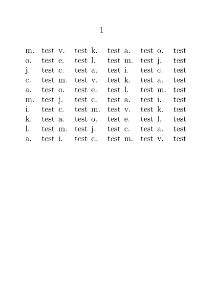
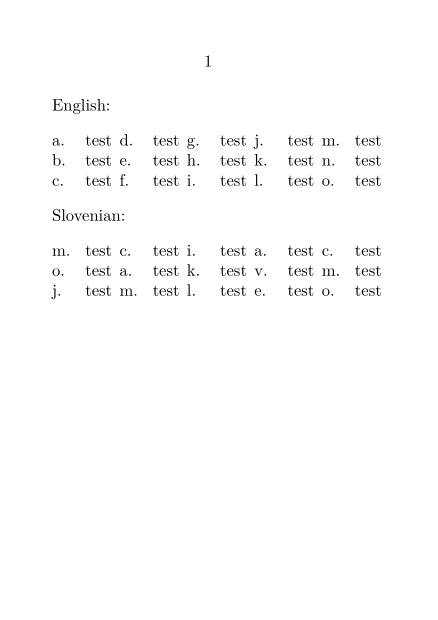
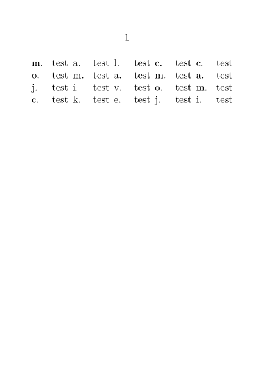
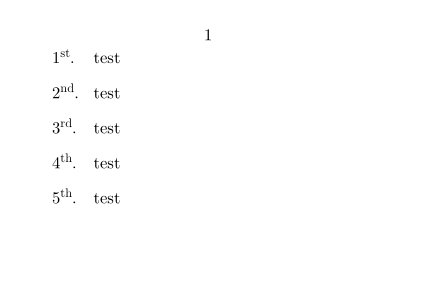
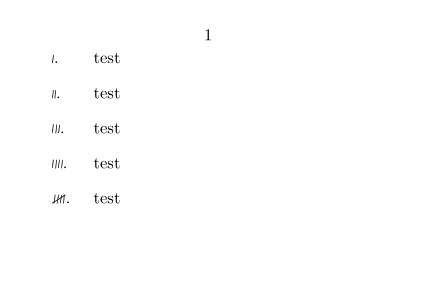

Sometimes, you might want to enumerate things using a number conversion (that is, the letter or symbol or whatever that "numbers" the item) which isn't one existing ConTeXt enumerations. (For a list of existing conversion, see \convertnumber. For example, Mojca Miklavec pointed out on the mailing list that, in Slovenian, it is traditional to letter things using the Slovenian alphabet, which doesn't quite match the English one. Hans provided this example of how to create a new enumeration in ConTeXt, which defines a "Mojcanian" numbering system, and a conversion based on those numbers.
(The last line of the definition is a cleverness to repeat the letters over and over as needed; more traditional orderings tend to replace that with a simple - to indicate an out-of-range letter.)
-
\setuppapersize[A7] \def\mojcaniannumber#1% {\ifcase#1 \or m\or o\or j\or c\or a\or m\or i\or k\or l\or a\or v\or e\or c\else \expandafter \mojcaniannumber \expandafter{\the\numexpr#1-13\relax}\fi} \defineconversion[s][\mojcaniannumber] \starttext \startitemize[s,columns,five,packed,broad] \dorecurse{50}{\item test\endgraf} \stopitemize \stoptext
- 
Conversions can also be language-specific. For instance, suppose that we want the default "character" conversion to be Mojcanian numbers when the language is Slovenian. This can be done with the following conversion defintion:
\defineconversion[sl][a][\mojcaniannumber]
We can test this one like so:
-
\setuppapersize[A7] \def\mojcaniannumber#1% {\ifcase#1 \or m\or o\or j\or c\or a\or m\or i\or k\or l\or a\or v\or e\or c\else \expandafter \mojcaniannumber \expandafter{\the\numexpr#1-13\relax}\fi} \defineconversion[sl][a][\mojcaniannumber] \starttext English: \startitemize[a,columns,five,packed,broad] \dorecurse{15}{\item test\endgraf} \stopitemize Slovenian: \language[sl] \startitemize[a,columns,five,packed,broad] \dorecurse{15}{\item test\endgraf} \stopitemize \stoptext
- 
An alternate way of defining conversions is via a list, using an itemize environment much like the previous examples. This has the advantage of being simpler and clearer to program, but the disadvantage that one can't include clever things like repeating the letters ad infinitum, or doubling them up ("..., x, y, z, aa, ab, ac, ...") as the default character enumerations do.
Notice how, once we run out of letters, the conversion simply produces empty labels.
-
\setuppapersize[A7] \defineconversion[s][m, o, j, c, a, m, i, k, l, a, v, e, c] \starttext \startitemize[s,columns,five,packed,broad] \dorecurse{20}{\item test\endgraf} \stopitemize \stoptext
- 
There are a number of additional examples of conversion definitions in core-con.lua, which is where ConTeXt's default conversions are defined.
Examples
- Another example of conversion posted by Hans on the mailing list
-
\setuppapersize[A8,landscape] %\defineconversion[ordinal][\enordinaldaynumber] \starttext \startitemize[ordinal,2*broad] \item test \item test \item test \item test \item test \stopitemize \stoptext
- 
- An example from source:meta-txt.tex
-
\setuppapersize[A8,landscape] \useMPlibrary[txt] \starttext \startitemize[fuzzy,2*broad] \item test \item test \item test \item test \item test \stopitemize \stoptext
- 